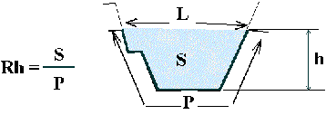
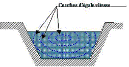
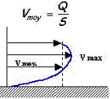
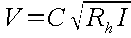
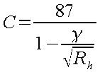
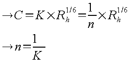

Voir exemple : Les Conduites
L'étude des écoulements dans les réseaux d'assainissement est basée sur les lois hydrauliques régissant les écoulements à surface libre; c'est à dire comportant une surface libre avec l'air. Cependant bien qu'elles devraient être théoriquement exceptionnelles, les mises en charge apparaissent relativement fréquemment sur les réseaux d'assainissement.
Les écoulements à surface libre en régime permanent peuvent présenter deux aspects :
si la pente longitudinale et la section transversale sont constantes tout le long de la masse liquide, le régime est uniforme.
dans le cas contraire le régime est varié.
Dans le cas des réseaux d'assainissement, les écoulements en canalisation sont généralement considérés comme graduellement variés, ce qui n'est pas toujours justifié.
Les écoulements à surface libre sont étudiés à partir des caractéristiques de la section transversale de la veine liquide :
H : la hauteur d'eau au-dessus du fond ou profondeur,
S : la surface mouillée, aire de la section mouillée qui est la portion de la section transversale occupée par le liquide,
P : le périmètre mouillé, longueur de la ligne de contact entre la surface mouillée et le lit,
Rh :le rayon hydraulique, quotient de la surface mouillée par le périmètre mouillé,
L : la largeur de la section transversale à la surface libre ou largeur au miroir

Dans un collecteur dont la pente, la section, la rugosité et le débit sont constants, il s'établit un régime dit uniforme où les caractéristiques hydrauliques ne varient pas de section en section, et demeurent constantes tout au long de l'écoulement.
Si dans une section S d'un canal, le débit Q est constant, par suite de la rugosité des parois (herbes, galets, béton) des variations de vitesse se manifestent d'un filet à un autre. Ainsi, près des parois, la vitesse est pratiquement nulle et elle croît très rapidement en s'éloignant des bords; elle a son maximum dans la région centrale, et un point généralement situé au-dessous de la surface libre. On représente la répartition des vitesses dans la section en traçant les « courbes d'égale vitesse ».

On peut donc, puisque Q et S sont constants, définir une vitesse moyenne en fonction de la forme du canal (que nous caractérisons par son rayon hydraulique Rh), de la nature des parois (caractérisée par un coefficient γ, n ou K suivant les formules) et de la pente longitudinale i du canal.

Dans les canaux (dont les sections sont généralement plus régulières que celles des rivières), Chezy a établi que la vitesse moyenne V dans une section pouvait s'écrire :

|
C |
coefficient de proportionnalité qui peut se calculer par les formules de Bazin ou de Manning-Strickler |
|
Rh |
rayon hydraulique de la section (en m) |
|
I |
pente longitudinale du canal (en m/m) |
|
V |
vitesse en m/s |
(utilisée pour la construction des abaques de l'instruction technique de 1977)

où γ est le coefficient de rugosité des parois qui a pour valeurs :
g=0,06 pour des parois très lisses (ciment).
g=0,16 pour des parois lisses (béton).
g=0,46 pour des parois rugueuses (maçonnerie).
(Formule de Strickler utilisée dans Hydrouti et Papyrus)

où K est le coefficient de Strickler et n le coefficient de Manning.
![[Attention]](chmicons/caution.png) | Attention |
|---|---|
Dans le cadre de l'hydraulique des systèmes d'assainissement, les valeurs recommandées pour le coefficient K doivent se limiter à une fourchette allant de 60 à 90, et ce quelque soit le type du matériau de la conduite, |